07 - ЕКСПОНЕНЦІАЛЬНЕ ЗГЛАДЖУВАННЯ
Прогнозування часових рядів
КНЕУ::ІІТЕ
11/9/22
Експоненціальне згладжування: концепція
Історична довідка
Розроблено в 1950-х і 1960-х роках як методи (алгоритми) для створення точкових прогнозів.
Об’єднує «рівень», «тренд» і «сезонну» компоненти для опису часових рядів.
Швидкість зміни компонентів контролюється «параметрами згладжування»: \(\alpha\), \(\beta\) і \(\gamma\) відповідно.
Необхідно вибрати оптимальні значення для параметрів згладжування (та початкових значеннь).
Сучасні моделі ETS (error-trend-seasonal), розроблені в 1990-х і 2000-х роках.
Головна ідея: контроль за швидкістю зміни
\(\alpha\) контролює зміну рівнів часового ряду
- Якщо \(\alpha = 0\), рівні ніколи не оновлюються (середній)
- Якщо \(\alpha = 1\), рівні оновлюються повністю (наївно)
\(\beta\) контролює зміну тренду
- Якщо \(\beta = 0\), тренд є лінійним
- Якщо \(\beta = 1\), тренд змінюється для кожного спостереження
\(\gamma\) контролює зміну сезонності
- Якщо \(\gamma = 0\), сезонність фіксована (середня сезонність)
- Якщо \(\gamma = 1\), сезонність повністю оновлюється (наївна сезонність)
Модель для рівнів, тредну та сезонності
Нам потрібна модель, яка визначає рівень \((\ell_t)\), тренд \((b_t)\) і сезонність \((s_t)\).
Як поєднати ці елементи?
Адитивно? \[y_t = \ell_{t-1} + b_{t-1} + s_{t-m} + \varepsilon_t\]
Мультиплікативно? \[y_t = \ell_{t-1}b_{t-1}s_{t-m}(1 + \varepsilon_t)\]
Може поєднаємо все? \[y_t = (\ell_{t-1} + b_{t-1}) s_{t-m} + \varepsilon_t\]
Як рівень, тренд та сезонність змінюються з часом?
ETS моделі
Форма запису E T S : ExponenTialSmoothing
\(\nearrow\) \(\uparrow\) \(\nwarrow\)
Error Trend Season
Error: Адитивні ("A") або мультиплікативні ("M")
Trend: Відсутній ("N"), адитивний ("A"), мультиплікативний ("M") або демпфований ("Ad" або "Md").
Seasonality: Відсутній ("N"), адитивна ("A") or мультиплікативна ("M")
Просте експоненціальне згладжування (SES)
Прості методи
Часовий ряд \(y_1, y_2, \dots, y_T\)
Наїваний метод (naive) \[\hat{y}_{T+h|T} = y_T\]
На основі середнього (average) \[\hat{y}_{T+h|T} = \frac1T\sum_{t=1}^T y_t\]
- Хочете щось середнє між цими методами.
- Останні дані повинні мати більшу вагу.
Просте експоненціальне згладжування
Рівняння: \[\hat{y}_{T+1|T} = \alpha y_T + \alpha(1-\alpha) y_{T-1} + \alpha(1-\alpha)^2 y_{T-2}+ \cdots\] де \(0 \le \alpha \le 1\)
| Спостереження | \(\alpha = 0.2\) | \(\alpha = 0.4\) | \(\alpha = 0.6\) | \(\alpha = 0.8\) |
|---|---|---|---|---|
| \(y_t\) | 0.2 | 0.4 | 0.6 | 0.8 |
| \(y_{t-1}\) | 0.16 | 0.24 | 0.24 | 0.16 |
| \(y_{t-2}\) | 0.128 | 0.144 | 0.096 | 0.032 |
| \(y_{t-3}\) | 0.1024 | 0.0864 | 0.0384 | 0.0064 |
| \(y_{t-4}\) | 0.0819 | 0.0518 | 0.0154 | 0.0013 |
| \(y_{t-5}\) | 0.0655 | 0.0311 | 0.0061 | 0.0003 |
Просте експоненціальне згладжування
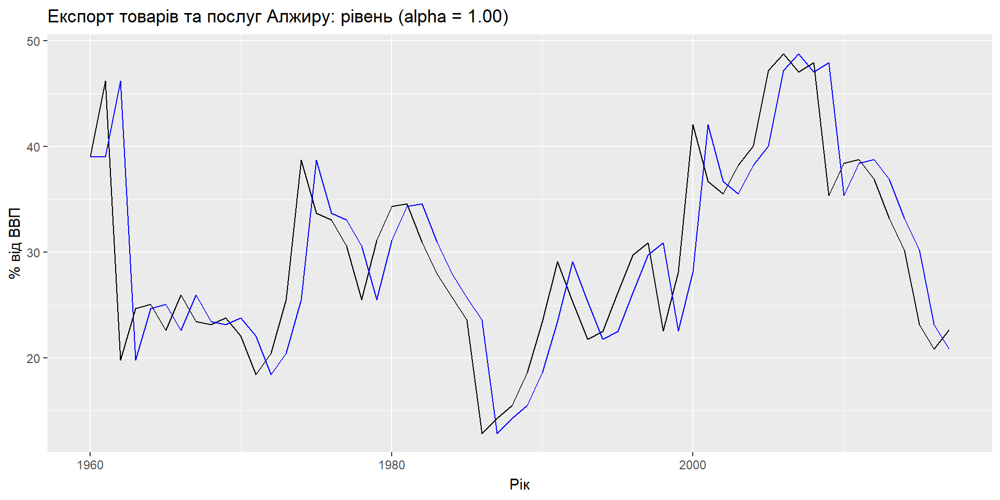Компоненти
Формула прогнозу: \(\hat{y}_{t+h|t} = \ell_{t}\)
Формула згладжування: \(\ell_{t} = \alpha y_{t} + (1 - \alpha)\ell_{t-1}\)
- \(\ell_t\) – це рівень (або згладжене значення) ряду в момент часу t.
- \(\hat{y}_{t+1|t} = \alpha y_t + (1-\alpha) \hat{y}_{t|t-1}\)
SES має “плоску” функцію прогнозу: \[\hat{y}_{T+h|T} = \hat{y}_{T+1|T} = \ell_{T}, \quad h = 2,3,\dots\] > Такі прогнози будуть придатними лише в тому випадку, якщо часовий ряд не має тенденційної чи сезонної складової.
Оптимізація параметру згладжування
Необхідно обрати оптимальне значення \(\alpha\) та \(\ell_0\)
Аналогічно до МНК, обираємо оптимальне за рахунок мінімізації суми квадтару відхилення: \[SSE = \sum_{t=1}^T(y_t - \hat{y}_{t|t-1})^2 = \sum_{t=1}^Te_t^2\]
ETS(A, N, N): модель SES
Компоненти:
Формула прогнозу: \(\hat{y}_{t+h|t} = \ell_{t}\)
Формула згладжування: \(\ell_{t} = \alpha y_{t} + (1 - \alpha)\ell_{t-1}\)
Залишки моделі: \(e_t = y_t - \hat{y}_{t|t-1} = y_t - \ell_{t-1}\)
Формула з залишками: \(y_t = \ell_{t-1} + e_t; \quad \ell_{t}= \ell_{t-1}+\alpha(y_{t}-\ell_{t-1}) = \ell_{t-1}+\alpha e_{t}\)
Похибки на навчальній вибірці призводять до коригування оцінки рівнів часового ряду в процесі згладжування.
Наприклад, якщо залишок в момент часу \(t\) від’ємний, тобто \(y_t < \hat{y}_{t|t-1}\), тоді рівень в момент часу \(t-1\) був завищений. Новий рівень \(\ell_t\) це попередній рівень \(\ell_{t-1}\) скорегований на заниження.
ETS(A, N, N): специфікація моделі
За замовчуванням підбираються оптимальні значення для \(\alpha\) та \(\ell_0\).
Або можна обрати вручну з trend()
Приклад: Експорт Алжиру
algeria_economy <- global_economy %>%
filter(Country == "Algeria")
fit <- algeria_economy %>%
model(ANN = ETS(Exports ~ error("A") + trend("N") + season("N")))
report(fit)Series: Exports
Model: ETS(A,N,N)
Smoothing parameters:
alpha = 0.8399875
Initial states:
l[0]
39.539
sigma^2: 35.6301
AIC AICc BIC
446.7154 447.1599 452.8968 Приклад: Експорт Алжиру
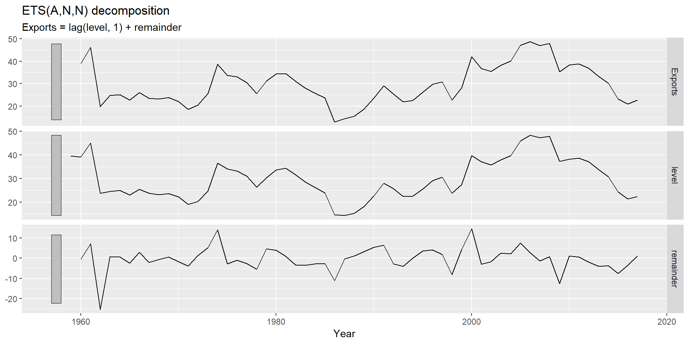Приклад: Експорт Алжиру
# A dable: 59 x 7 [1Y]
# Key: Country, .model [1]
# : Exports = lag(level, 1) + remainder
Country .model Year Exports level remainder .fitted
<fct> <chr> <dbl> <dbl> <dbl> <dbl> <dbl>
1 Algeria ANN 1959 NA 39.5 NA NA
2 Algeria ANN 1960 39.0 39.1 -0.496 39.5
3 Algeria ANN 1961 46.2 45.1 7.12 39.1
4 Algeria ANN 1962 19.8 23.8 -25.3 45.1
5 Algeria ANN 1963 24.7 24.6 0.841 23.8
6 Algeria ANN 1964 25.1 25.0 0.534 24.6
7 Algeria ANN 1965 22.6 23.0 -2.39 25.0
8 Algeria ANN 1966 26.0 25.5 3.00 23.0
9 Algeria ANN 1967 23.4 23.8 -2.07 25.5
10 Algeria ANN 1968 23.1 23.2 -0.630 23.8
# … with 49 more rowsПриклад: Експорт Алжиру
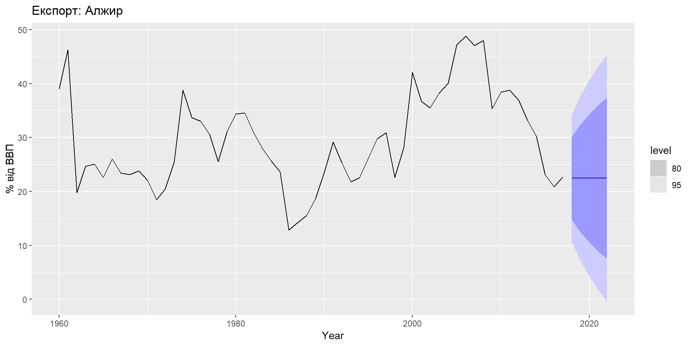Моделі з трендом: Хольт
Модель Хольта
Компоненти:
Прогноз: \(\quad \hat{y}_{t+h|t} = \ell_{t} + hb_{t}\)
Рівень: \(\quad \quad\ell_{t} = \alpha y_{t} + (1 - \alpha)(\ell_{t-1} + b_{t-1})\)
Тренд: \(\quad \quad b_{t} = \beta^*(\ell_{t} - \ell_{t-1}) + (1 -\beta^*)b_{t-1},\)
Параметри згладжування \(\alpha\) та \(\beta^*\) \(\quad(0\le\alpha,\beta^*\le1)\)
\(\ell_t\) рівень: зважене середнє між \(y_t\) та прогнозом на один крок вперед в момент часу \(t\), \(\quad(\ell_{t-1} + b_{t-1}=\hat{y}_{t|t-1})\)
\(b_t\) градієнт: зважене середнє між \((\ell_{t} - \ell_{t-1})\) та \(b_{t-1}\), поточна та попередня оцінка нахилу тренду.
ETS(A,A,N)
Модель Хольта з адитивними залишками
Припустимо \(\varepsilon_t=y_t-\ell_{t-1}-b_{t-1} \sim \text{NID}(0,\sigma^2)\)
Тоді підставлючи похибки у рівняння: \[y_t =\ell_{t-1}+b_{t-1}+\varepsilon_t \\ \ell_t =\ell_{t-1}+b_{t-1}+\alpha \varepsilon_t \\ b_t =b_{t-1}+\alpha\beta^* \varepsilon_t\]
Для простоти запишемо \(\beta=\alpha \beta^*\), тоді: \[b_t =b_{t-1}+\beta \varepsilon_t\]
Еспоненціальне згладжування: тренд
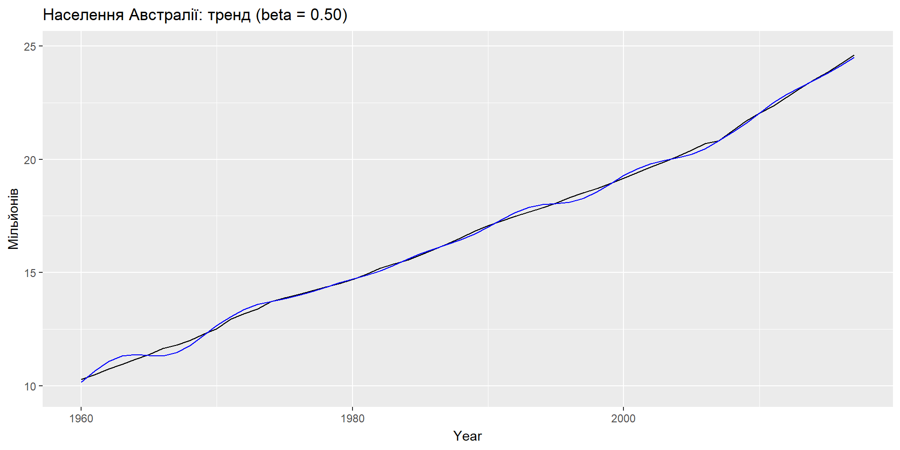ETS(A,A,N): специфікація моделі
За замовчуванням підбираються оптимальні значення для \(\beta\) та \(b_0\).
\(\beta\) можна обрати вручну з trend()
Приклад: населення Австралії
aus_economy <- global_economy %>% filter(Code == "AUS") %>%
mutate(Pop = Population/1e6)
fit <- aus_economy %>%
model(AAN = ETS(Pop ~ error("A") + trend("A") + season("N")))
report(fit)Series: Pop
Model: ETS(A,A,N)
Smoothing parameters:
alpha = 0.9999
beta = 0.3266366
Initial states:
l[0] b[0]
10.05414 0.2224818
sigma^2: 0.0041
AIC AICc BIC
-76.98569 -75.83184 -66.68347 Приклад: населення Австралії
# A dable: 59 x 8 [1Y]
# Key: Country, .model [1]
# : Pop = lag(level, 1) + lag(slope, 1) + remainder
Country .model Year Pop level slope remainder .fitted
<fct> <chr> <dbl> <dbl> <dbl> <dbl> <dbl> <dbl>
1 Australia AAN 1959 NA 10.1 0.222 NA NA
2 Australia AAN 1960 10.3 10.3 0.222 -0.000145 10.3
3 Australia AAN 1961 10.5 10.5 0.217 -0.0159 10.5
4 Australia AAN 1962 10.7 10.7 0.231 0.0418 10.7
5 Australia AAN 1963 11.0 11.0 0.223 -0.0229 11.0
6 Australia AAN 1964 11.2 11.2 0.221 -0.00641 11.2
7 Australia AAN 1965 11.4 11.4 0.221 -0.000314 11.4
8 Australia AAN 1966 11.7 11.7 0.235 0.0418 11.6
9 Australia AAN 1967 11.8 11.8 0.206 -0.0869 11.9
10 Australia AAN 1968 12.0 12.0 0.208 0.00350 12.0
# … with 49 more rowsПриклад: населення Австралії
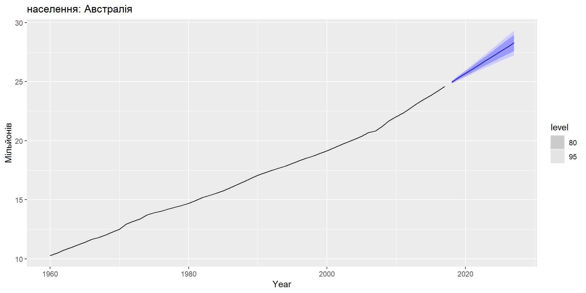Метод демпфованого тренду
Метод демпфованого тренду
Компоненти:
\[\hat{y}_{t+h|t} = \ell_{t} + (\phi+\phi^2 + \dots + \phi^{h})b_{t} \\ \ell_{t} = \alpha y_{t} + (1 - \alpha)(\ell_{t-1} + \phi b_{t-1}) \\ b_{t} = \beta^*(\ell_{t} - \ell_{t-1}) + (1 -\beta^*)\phi b_{t-1}\]
Параметр демпфування \(0<\phi<1\)
Коли \(\phi=1\), модель ідентична моделі Хольта
Якщо \(h\rightarrow\infty\), \(\hat{y}_{T+h|T}\rightarrow \ell_T+\frac{\phi b_T}{(1-\phi)}\)
Короткострокові прогнози мають тренд, довгострокові прогнози - незмінні.
Приклад: населення Австралії

Приклад: населення Австралії
Приклад: населення Австралії
| term | SES | Linear trend | Damped trend |
|---|---|---|---|
| $\alpha$ | 1.00 | 1.00 | 1.00 |
| $\beta^*$ | 0.30 | 0.40 | |
| $\phi$ | 0.98 | ||
| $\ell_0$ | 10.28 | 10.05 | 10.04 |
| $b_0$ | 0.22 | 0.25 | |
| Training RMSE | 0.24 | 0.06 | 0.07 |
| Test RMSE | 1.63 | 0.15 | 0.21 |
| Test MASE | 6.18 | 0.55 | 0.75 |
| Test MAPE | 6.09 | 0.55 | 0.74 |
| Test MAE | 1.45 | 0.13 | 0.18 |
Моделі з сезонністю: Хольт-Вінтерс
Адитивна модель Хольта-Вінтерса
Холь та Вінтерс розширили модель Хольта, яка включає сезонність.
Компоненти:
\[\hat{y}_{t+h|t} = \ell_{t} + hb _{t} + s_{t+h-m(k+1)}\] \[\ell_{t} = \alpha(y_{t} - s_{t-m}) + (1 - \alpha)(\ell_{t-1} + b_{t-1})\] \[b_{t} = \beta^*(\ell_{t} - \ell_{t-1}) + (1 - \beta^*)b_{t-1}\] \[s_{t} = \gamma (y_{t}-\ell_{t-1}-b_{t-1}) + (1-\gamma)s_{t-m}\]
- \(k=\) ціла частина від \((h-1)/m\). Використовує останній сезон для прогнозування.
- Параметри: \(0\le \alpha\le 1\), \(0\le \beta^*\le 1\), \(0\le \gamma\le 1-\alpha\) та \(m=\) період сезонності.
Адитивна модель Хольта-Вінтерса
Сезонна складова зазвичай записується як \[s_{t} = \gamma^*(y_{t}-\ell_{t})+(1-\gamma^*)s_{t-m}\]
Замінивши \(\ell_t\): \[s_{t} = \gamma^*(1-\alpha) (y_{t}-\ell_{t-1}-b_{t-1})+ [1-\gamma^*(1-\alpha)]s_{t-m}\]
Записуємо \[\gamma=\gamma^*(1-\alpha)\]
Звичайне обмеження параметру \(0\le\gamma^*\le1\) переписується як \[0\le\gamma\le(1-\alpha)\]
Еспоненціальне згладжування: сезонність

Еспоненціальне згладжування: сезонність
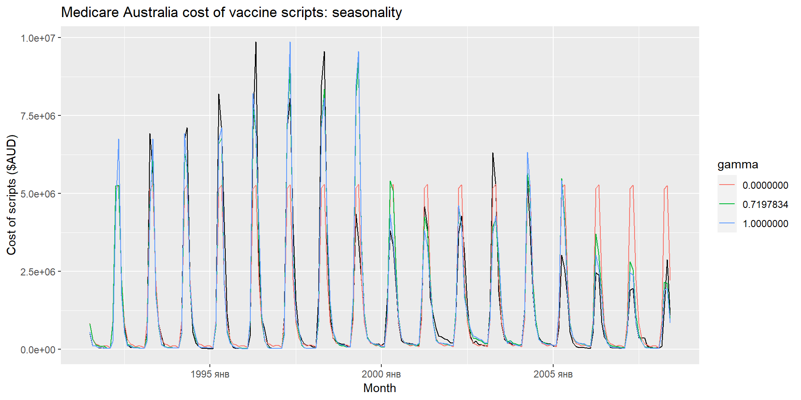ETS(A,A,A)
Адитивна модель Хольта-Вінтерса з адитивними залишками
Рівняння прогнозу: \(\quad\quad\hat{y}_{t+h|t} = \ell_{t} + hb_{t} + s_{t+h-m(k+1)}\)
Рівняння спостережень: \(\quad y_t=\ell_{t-1}+b_{t-1}+s_{t-m} + \varepsilon_t\)
Рівняння компонент: \(\quad\quad\quad\ell_t=\ell_{t-1}+b_{t-1}+\alpha \varepsilon_t\) \[b_t=b_{t-1}+\beta \varepsilon_t \\ s_t = s_{t-m} + \gamma\varepsilon_t\]
- Похибки прогнозу: \(\varepsilon_{t} = y_t - \hat{y}_{t|t-1}\)
- \(k\) ціла частина з \((h-1)/m\)
Мультиплікативний метод Хольта-Вінтерса
Коли сезонні коливання змінюються пропорційно зміні рівнів ряду.
Компоненти: \[\hat{y}_{t+h|t} = (\ell_{t} + hb_{t})s_{t+h-m(k+1)} \\ \quad\quad\ell_{t} = \alpha \frac{y_{t}}{s_{t-m}} + (1 - \alpha)(\ell_{t-1} + b_{t-1}) \\ \quad b_{t} = \beta^*(\ell_{t}-\ell_{t-1}) + (1 - \beta^*)b_{t-1} \\ \quad\quad s_{t} = \gamma \frac{y_{t}}{(\ell_{t-1} + b_{t-1})} + (1 - \gamma)s_{t-m}\]
- \(k\) ціла частина з \((h-1)/m\)
- Для адитивного методу \(s_t\) у абсолютних значеннях: \(\sum_i s_i \approx 0\)
- Для мультиплікативного методу \(s_t\) у відносних значеннях: \(\sum_i s_i \approx m\)
ETS(M,A,M)
Мультиплікативний метод Хольта-Вінтерса з мультиплікативними залишками
Рівняння прогнозу: \(\quad\quad\quad\hat{y}_{t+h|t} = (\ell_{t} + hb_{t}) s_{t+h-m(k+1)}\)
Рівняння спостережень: \(\quad y_t = (\ell_{t-1}+b_{t-1})s_{t-m}(1 + \varepsilon_t)\)
Рівняння компонент: \(\quad\quad\ell_t=(\ell_{t-1}+b_{t-1})(1+\alpha \varepsilon_t)\) \[\quad \quad b_t=b_{t-1} +\beta(\ell_{t-1}+b_{t-1}) \varepsilon_t \\ s_t = s_{t-m}(1 + \gamma\varepsilon_t)\]
- Похибки прогнозу: \(\varepsilon_{t} = (y_t - \hat{y}_{t|t-1})/\hat{y}_{t|t-1}\)
- \(k\) ціла частина з \((h-1)/m\)
Приклад: туризм Австралії
Приклад: туризм Австралії
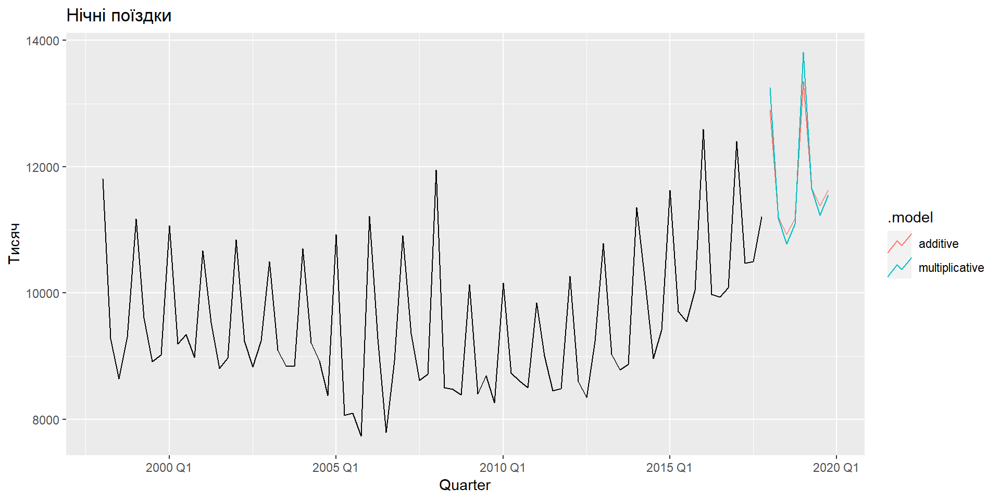Компоненти
# A dable: 168 x 7 [1Q]
# Key: .model [2]
# : Trips = lag(level, 1) + lag(slope, 1) + lag(season, 4) + remainder
.model Quarter Trips level slope season remainder
<chr> <qtr> <dbl> <dbl> <dbl> <dbl> <dbl>
1 additive 1997 Q1 NA NA NA 1512. NA
2 additive 1997 Q2 NA NA NA -290. NA
3 additive 1997 Q3 NA NA NA -684. NA
4 additive 1997 Q4 NA 9899. -37.4 -538. NA
5 additive 1998 Q1 11806. 9964. -24.5 1512. 433.
6 additive 1998 Q2 9276. 9851. -35.6 -290. -374.
7 additive 1998 Q3 8642. 9700. -50.2 -684. -489.
8 additive 1998 Q4 9300. 9694. -44.6 -538. 188.
9 additive 1999 Q1 11172. 9652. -44.3 1512. 10.7
10 additive 1999 Q2 9608. 9676. -35.6 -290. 290.
# … with 158 more rowsКомпоненти

Демпфований метод Хольта-Вінтерса
Демпфований метод Хольта-Вінтерса
Часто єдиний найточніший метод прогнозування для сезонних даних:
\[\hat{y}_{t+h|t} = [\ell_{t} + (\phi+\phi^2 + \dots + \phi^{h})b_{t}]s_{t+h-m(k+1)} \\ \ell_{t} = \alpha(y_{t} / s_{t-m}) + (1 - \alpha)(\ell_{t-1} + \phi b_{t-1})\\ b_{t} = \beta^*(\ell_{t} - \ell_{t-1}) + (1 - \beta^*)\phi b_{t-1} \\ s_{t} = \gamma \frac{y_{t}}{(\ell_{t-1} + \phi b_{t-1})} + (1 - \gamma)s_{t-m}\]
Хольт-Вінтерс для щоденних даних
sth_cross_ped <- pedestrian %>%
filter(Date >= "2016-07-01",
Sensor == "Southern Cross Station") %>%
index_by(Date) %>%
summarise(Count = sum(Count)/1000)
sth_cross_ped %>%
filter(Date <= "2016-07-31") %>%
model(
hw = ETS(Count ~ error("M") + trend("Ad") + season("M"))
) %>%
forecast(h = "2 weeks") %>%
autoplot(sth_cross_ped %>% filter(Date <= "2016-08-14")) +
labs(title = "Трафік пішоходів: Southern Cross",
y="Пішоходів ('000)")Хольт-Вінтерс для щоденних даних
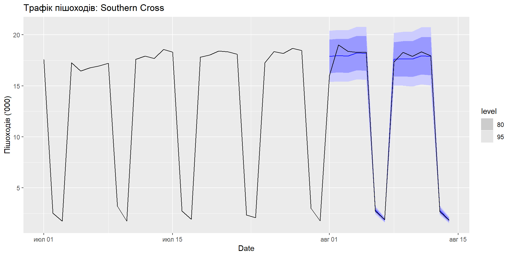Інноваційні моделі
Методи експоненціального згладжування
Компонента сезонності |
|||
|---|---|---|---|
| Компонента тренду | N (Відсутня) | A (Адитивна) | M (Мультиплікативна) |
| N (Відсутня) | (N,N) | (N,A) | (N,M) |
| A (Адитивний) | (A,N) | (A,A) | (A,M) |
| Ad (Адитивний демпфований) | (Ad, N) | (Ad, A) | (Ad, M) |
\((N,N)\): Просте експоненціальне згаджування
\((A,N)\): Лінійний метод Хольта
\((A_d,N)\): Адитивний демпфований тред
\((A,A)\): Адитивний метод Хольта-Вінтерса
\((A,M)\): Мультиплікативний метод Хольта-Вінтерса
\((A_d,M)\): Демпфований мультиплікативний метод Хольта-Вінтерса
ETS моделі
АДИТИВНІ ЗАЛИШКИ | |||
|---|---|---|---|
Компонента сезонності |
|||
| Компонента тренду | N (Відсутня) | A (Адитивна) | M (Мультиплікативна) |
| N (Відсутня) | (A,N,N) | (A,N,A) | (A,N,M) |
| A (Адитивний) | (A,A,N) | (A,A,A) | (A,A,M) |
| Ad (Адитивний демпфований) | (A,Ad,N) | (A,Ad,A) | (A,Ad,M) |
ETS моделі
МУЛЬТИПЛІКАТИВНІ ЗАЛИШКИ | |||
|---|---|---|---|
Компонента сезонності |
|||
| Компонента тренду | N (Відсутня) | A (Адитивна) | M (Мультиплікативна) |
| N (Відсутня) | (M,N,N) | (M,N,A) | (M,N,M) |
| A (Адитивний) | (M,A,N) | (M,A,A) | (M,A,M) |
| Ad (Адитивний демпфований) | (M,Ad,N) | (M,Ad,A) | (M,Ad,M) |
Моделі з адитивними залишками
.png)
Моделі з мультиплікативними залишками
.png)
Оцінювання ETS моделей
Параметри згладжування \(\alpha\), \(\beta\), \(\gamma\) та \(\phi\), а також початкові значення \(\ell_0\), \(b_0\), \(s_0,s_{-1},\dots,s_{ -m+1}\) оцінюються шляхом максимізації “правдоподібності” = ймовірності даних, що випливають із зазначеної моделі.
Для моделей з адитивними помилками підхід еквівалентний мінімізації SSE.
Для моделей з мультиплікативними помилками підхід НЕ еквівалентний мінімізації SSE.
Оцінювання ETS моделей
Традиційно: * \(0< \alpha,\beta^*,\gamma^*,\phi<1\) * У модель ми підставляємо \(\beta=\alpha\beta^*\) та \(\gamma=(1-\alpha)\gamma^*\) * Тому \(0< \alpha <1\), \(0 < \beta < \alpha\) та \(0< \gamma < 1-\alpha\) * \(0.8<\phi<0.98\) - для полегшення розрахунку
Допустимі обмеження: * Щоб запобігти впливу спостережень з далекого минулого на поточні прогнози. * Зазвичай (але не завжди) менші обмежування ніж в традиційному підході. * Наприклад, для ETS(A,N,N):
традиційно \(0< \alpha <1\) припускається \(0< \alpha <2\).
Вибір моделі
Інформаційний критерій Акаіке (AIC)
\[\text{AIC} = -2\log(\text{L}) + 2k\] де \(L\) – правдоподібність, а \(k\) – кількість параметрів моделі.
Скорегований AICc
\[\text{AIC}_{\text{c}} = \text{AIC} + \frac{2k(k+1)}{T-k-1}\] для корегування зміщення.
Баесовий інформаційний криетрій (BIC)
\[\text{BIC} = \text{AIC} + k[\log(T)-2].\]
Автоматизація прогнозування:
З роботи Hyndman та інших (IJF, 2002):
- Застосовується кожна модель, яка відповідає даним.
Оптимізуються параметри та початкові значення за допомогою ММП (або іншого критерію). - Обирається найкращий метод за допомогою AICc:
- Будується прогноз, використовуючи найкращий метод.
- Обчислюються довірчі інтервали.
Метод дуже добре показав себе на змаганнях М3.
Приклад: населення країн світу
# A mable: 263 x 2
# Key: Country [263]
Country ets
<fct> <model>
1 Afghanistan <ETS(A,A,N)>
2 Albania <ETS(M,A,N)>
3 Algeria <ETS(M,A,N)>
4 American Samoa <ETS(M,A,N)>
5 Andorra <ETS(M,A,N)>
6 Angola <ETS(M,A,N)>
7 Antigua and Barbuda <ETS(M,A,N)>
8 Arab World <ETS(M,A,N)>
9 Argentina <ETS(A,A,N)>
10 Armenia <ETS(M,A,N)>
# … with 253 more rowsПриклад: населення країн світу
# A fable: 1,315 x 5 [1Y]
# Key: Country, .model [263]
Country .model Year Pop .mean
<fct> <chr> <dbl> <dist> <dbl>
1 Afghanistan ets 2018 N(36, 0.012) 36.4
2 Afghanistan ets 2019 N(37, 0.059) 37.3
3 Afghanistan ets 2020 N(38, 0.16) 38.2
4 Afghanistan ets 2021 N(39, 0.35) 39.0
5 Afghanistan ets 2022 N(40, 0.64) 39.9
6 Albania ets 2018 N(2.9, 0.00012) 2.87
7 Albania ets 2019 N(2.9, 6e-04) 2.87
8 Albania ets 2020 N(2.9, 0.0017) 2.87
9 Albania ets 2021 N(2.9, 0.0036) 2.86
10 Albania ets 2022 N(2.9, 0.0066) 2.86
# … with 1,305 more rowsПриклад: електроенергія України
energy <- vroom("https://git.io/JDYAX") %>%
pivot_longer(!time, names_to = "type", values_to = "value") %>%
mutate(time = ymd_hms(time)) %>%
as_tsibble(index = time, key = type)
energy# A tsibble: 750,541 x 3 [1h] <UTC>
# Key: type [11]
time type value
<dttm> <chr> <dbl>
1 2014-01-01 00:00:00 AES 10728
2 2014-01-01 01:00:00 AES 10606
3 2014-01-01 02:00:00 AES 10515
4 2014-01-01 03:00:00 AES 10475
5 2014-01-01 04:00:00 AES 10427
6 2014-01-01 05:00:00 AES 10473
7 2014-01-01 06:00:00 AES 10469
8 2014-01-01 07:00:00 AES 10493
9 2014-01-01 08:00:00 AES 10479
10 2014-01-01 09:00:00 AES 10455
# … with 750,531 more rowsПриклад: електроенергія України
# A mable: 11 x 2
# Key: type [11]
type ets
<chr> <model>
1 AES <ETS(A,Ad,N)>
2 CONSUMPTION <ETS(M,N,M)>
3 GAES_GEN <ETS(A,N,A)>
4 GAES_PUMP <ETS(A,N,A)>
5 GES <ETS(A,N,A)>
6 TEC <ETS(M,Ad,M)>
7 TES <ETS(M,N,M)>
8 UK_BLR_RUS <ETS(A,N,A)>
9 UK_EURO <ETS(A,N,A)>
10 UK_MLD <ETS(A,N,A)>
11 VDE <ETS(A,Ad,A)>Приклад: електроенергія України
Series: value
Model: ETS(A,Ad,A)
Smoothing parameters:
alpha = 0.8048643
beta = 0.0001001706
gamma = 0.1951258
phi = 0.9751766
Initial states:
l[0] b[0] s[0] s[-1] s[-2] s[-3] s[-4] s[-5]
124.8749 0.4850034 -205.5111 -207.4407 -207.1193 -204.368 -185.616 -123.64
s[-6] s[-7] s[-8] s[-9] s[-10] s[-11] s[-12] s[-13]
-18.78656 107.8249 234.3663 349.6245 423.2788 462.4296 449.4224 369.3013
s[-14] s[-15] s[-16] s[-17] s[-18] s[-19] s[-20] s[-21]
230.1887 46.91798 -102.0972 -180.2585 -201.2115 -208.0023 -208.1248 -207.123
s[-22] s[-23]
-206.8092 -207.246
sigma^2: 8130.499
AIC AICc BIC
1373796 1373796 1374070 Приклад: електроенергія України
# A dable: 68,255 x 8 [1h] <UTC>
# Key: type, .model [1]
# : value = lag(level, 1) + 0.975176649672342 * lag(slope, 1) +
# lag(season, 24) + remainder
type .model time value level slope season remainder
<chr> <chr> <dttm> <dbl> <dbl> <dbl> <dbl> <dbl>
1 VDE ets 2013-12-31 00:00:00 NA NA NA -207. NA
2 VDE ets 2013-12-31 01:00:00 NA NA NA -207. NA
3 VDE ets 2013-12-31 02:00:00 NA NA NA -207. NA
4 VDE ets 2013-12-31 03:00:00 NA NA NA -208. NA
5 VDE ets 2013-12-31 04:00:00 NA NA NA -208. NA
6 VDE ets 2013-12-31 05:00:00 NA NA NA -201. NA
7 VDE ets 2013-12-31 06:00:00 NA NA NA -180. NA
8 VDE ets 2013-12-31 07:00:00 NA NA NA -102. NA
9 VDE ets 2013-12-31 08:00:00 NA NA NA 46.9 NA
10 VDE ets 2013-12-31 09:00:00 NA NA NA 230. NA
# … with 68,245 more rowsПриклад: електроенергія України
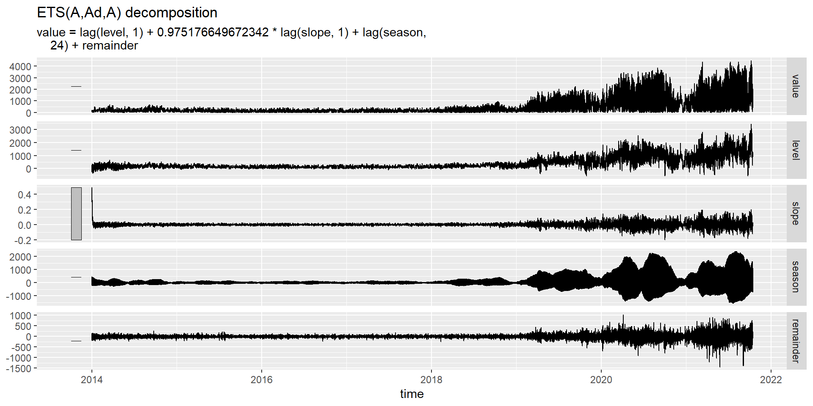Приклад: електроенергія України
# A fable: 528 x 5 [1h] <UTC>
# Key: type, .model [11]
type .model time value .mean
<chr> <chr> <dttm> <dist> <dbl>
1 AES ets 2021-10-13 23:00:00 N(9951, 2205) 9951.
2 AES ets 2021-10-14 00:00:00 N(9951, 4687) 9951.
3 AES ets 2021-10-14 01:00:00 N(9951, 7403) 9951.
4 AES ets 2021-10-14 02:00:00 N(9951, 10312) 9951.
5 AES ets 2021-10-14 03:00:00 N(9951, 13382) 9951.
6 AES ets 2021-10-14 04:00:00 N(9951, 16584) 9951.
7 AES ets 2021-10-14 05:00:00 N(9951, 19892) 9951.
8 AES ets 2021-10-14 06:00:00 N(9951, 23287) 9951.
9 AES ets 2021-10-14 07:00:00 N(9951, 26753) 9951.
10 AES ets 2021-10-14 08:00:00 N(9951, 30276) 9951.
# … with 518 more rowsПриклад: електроенергія України
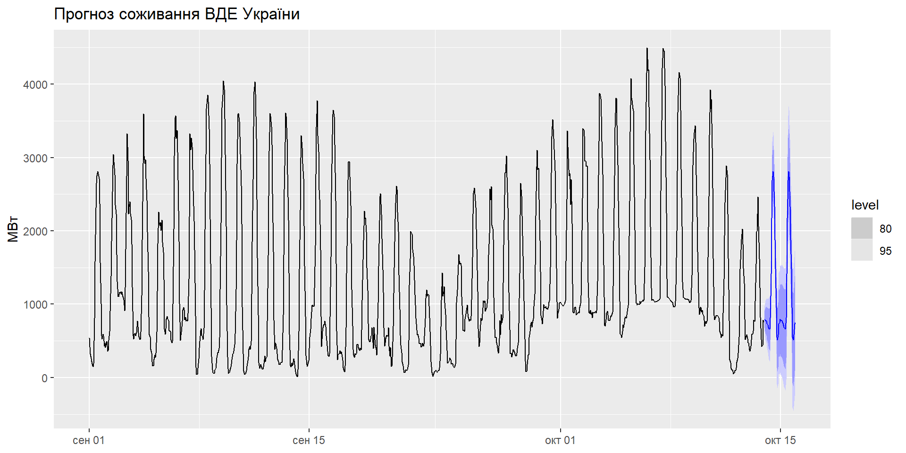Залишки
Звичайні: \[\hat{e}_t = y_t - \hat{y}_{t|t-1}\]
Просунуті (іноваційні): * Адитивні \[\hat\varepsilon_t = y_t - \hat{y}_{t|t-1}\]
- Мультиплікативні \[\hat\varepsilon_t = \frac{y_t - \hat{y}_{t|t-1}}{\hat{y}_{t|t-1}}\]
Приклад: електроенергія України
Series: value
Model: ETS(M,N,M)
Smoothing parameters:
alpha = 0.8509127
gamma = 0.1386315
Initial states:
l[0] s[0] s[-1] s[-2] s[-3] s[-4] s[-5] s[-6]
7215.222 0.885151 1.077347 0.906587 1.020852 1.181553 1.067999 1.252148
s[-7] s[-8] s[-9] s[-10] s[-11] s[-12] s[-13] s[-14]
1.159245 1.212238 1.129374 1.207462 1.174475 1.162923 1.064444 0.9882759
s[-15] s[-16] s[-17] s[-18] s[-19] s[-20] s[-21] s[-22]
0.9559876 0.9943594 0.944768 0.8241083 0.7233081 0.7095042 0.7773208 0.7607846
s[-23]
0.8197847
sigma^2: 0.0021
AIC AICc BIC
1508282 1508282 1508528 Приклад: електроенергія України
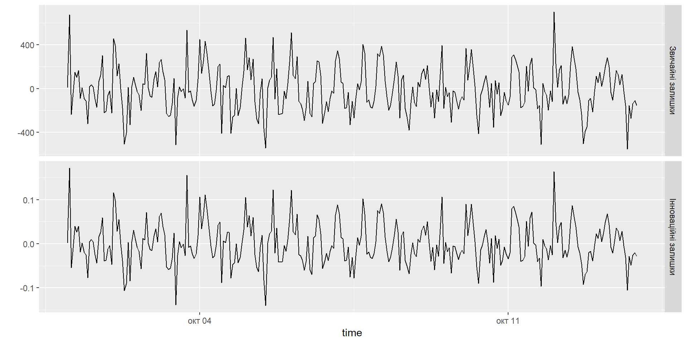Приклад: електроенергія України
.code70[
# A tsibble: 68,231 x 7 [1h] <UTC>
# Key: type, .model [1]
type .model time value .fitted .resid .innov
<chr> <chr> <dttm> <dbl> <dbl> <dbl> <dbl>
1 TES ets 2014-01-01 00:00:00 6044 5915. 129. 0.0218
2 TES ets 2014-01-01 01:00:00 6038 5591. 447. 0.0799
3 TES ets 2014-01-01 02:00:00 5865 6101. -236. -0.0387
4 TES ets 2014-01-01 03:00:00 5524 5385. 139. 0.0257
5 TES ets 2014-01-01 04:00:00 5506 5610. -104. -0.0186
6 TES ets 2014-01-01 05:00:00 5346 6291. -945. -0.150
7 TES ets 2014-01-01 06:00:00 5343 6290. -947. -0.151
8 TES ets 2014-01-01 07:00:00 5324 5772. -448. -0.0776
9 TES ets 2014-01-01 08:00:00 5366 5183. 183. 0.0354
10 TES ets 2014-01-01 09:00:00 5431 5519. -88.0 -0.0159
# … with 68,221 more rowsДеякі нестабільні моделі
Деякі комбінації (Error, Trend, Seasonal) можуть призвести до чисельних труднощів;
Це: ETS(A,N,M), ETS(A,A,M), ETS(A,Ad,M);
Моделі з мультиплікативними помилками корисні для позитивних даних, але є нестабільними з даними, що містять нулі або від’ємні значення. У цьому випадку будуть застосовані лише шість повністю адитивних моделей.
Прогнозування з експоненціальним згладжуванням
Прогнозування з ETS моделями
Традиційний точковий прогноз: повторіть рівняння для \(t=T+1,T+2,\dots,T+h\) і встановіть усі \(\varepsilon_t=0\) для \(t>T\).
Довірчі інтервали: можна отримати лише за допомогою моделей.
- ДІ будуть відрізнятися між моделями з адитивними та мультиплікативними помилками.
Для більшості ETS моделей ДІ: \[\hat{y}_{T+h|T} \pm c \sigma_h\] де \(c\) - показник ймовірності, а \(\sigma_h\) стандартне відхилення прогнозу
Прогнозування з ETS моделями
Для ETS моделей стандартне відхилення розраховується залежно від моделі, наприклад:
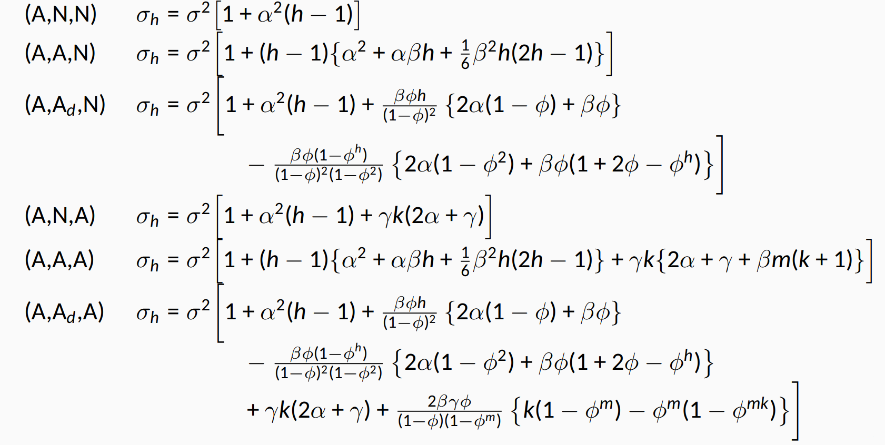Приклад: продаж ліків
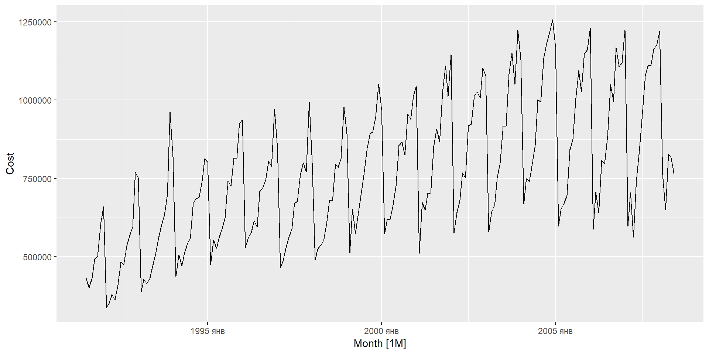Приклад: продаж ліків
Series: Cost
Model: ETS(M,Ad,M)
Smoothing parameters:
alpha = 0.3071016
beta = 0.0001006793
gamma = 0.0001007181
phi = 0.977528
Initial states:
l[0] b[0] s[0] s[-1] s[-2] s[-3]
417268.7 8205.82 0.8716807 0.8259747 0.7562808 0.7733338
s[-4] s[-5] s[-6] s[-7] s[-8] s[-9] s[-10]
0.6872373 1.283821 1.324616 1.180067 1.163601 1.104801 1.047963
s[-11]
0.9806235
sigma^2: 0.0046
AIC AICc BIC
5515.212 5518.909 5574.938 Приклад: продаж ліків
Series: Cost
Model: ETS(A,A,A)
Smoothing parameters:
alpha = 0.1702163
beta = 0.006310854
gamma = 0.4545987
Initial states:
l[0] b[0] s[0] s[-1] s[-2] s[-3]
409705.9 9097.111 -99075.37 -136602.3 -191496.1 -174530.8
s[-4] s[-5] s[-6] s[-7] s[-8] s[-9] s[-10]
-241436.7 210643.8 244644.2 145368.2 130569.6 84457.69 39131.7
s[-11]
-11673.71
sigma^2: 3498869384
AIC AICc BIC
5585.278 5588.568 5641.686 Приклад: продаж ліків
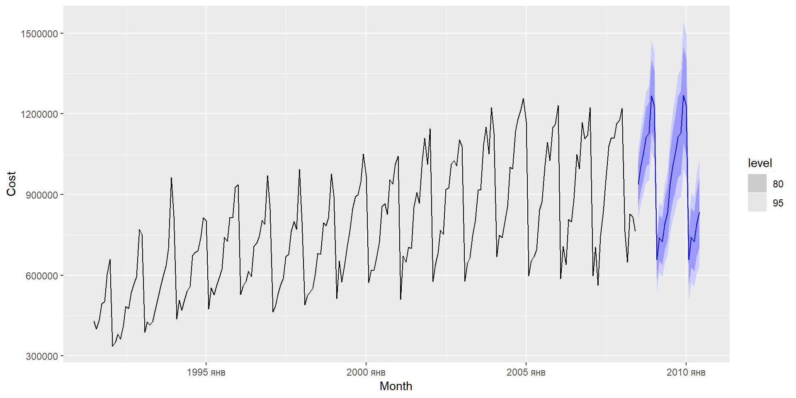Приклад: продаж ліків
| Model | MAE | RMSE | MAPE | MASE | RMSSE |
|---|---|---|---|---|---|
| auto | 38649.04 | 51102.24 | 4.988983 | 0.6375806 | 0.6891173 |
| AAA | 43378.40 | 56784.23 | 6.047574 | 0.7155993 | 0.7657394 |
Дякую за увагу!
ihor.miroshnychenko@kneu.ua